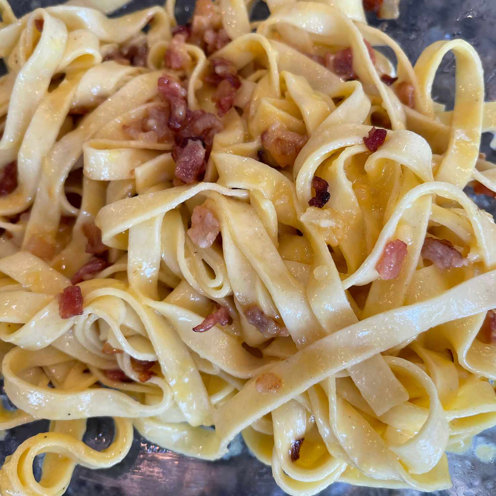

Mapo Tofu

Description
Fettuccine Carbonara is a classic Italian pasta dish known for its rich and creamy sauce. This indulgent recipe features fettuccine noodles coated in a decadent sauce made with eggs, cheese, and pancetta. The result is a comforting and satisfying dish that's perfect for any pasta lover.
Ingredients:
- Fettuccine noodles
- Eggs
- Grated Pecorino Romano cheese
- Guanciale or pancetta, diced
- Black pepper, freshly ground
- Salt, to taste
Steps:
- Boil a pot of salted water and cook the fettuccine according to package instructions until al dente.
- In a bowl, whisk together eggs, grated Pecorino Romano cheese, and a generous amount of freshly ground black pepper.
- In a pan, sauté diced guanciale or pancetta until crispy.
- Once the pasta is cooked, reserve a cup of pasta water, then drain the fettuccine and immediately toss it into the pan with the crispy guanciale or pancetta.
- Remove the pan from heat and quickly pour the egg and cheese mixture over the hot pasta, stirring continuously to create a creamy sauce. If needed, add some reserved pasta water to achieve the desired consistency.
- Season with salt and additional black pepper to taste.
- Serve the Fettuccine Carbonara immediately, garnished with extra Pecorino Romano cheese and a sprinkle of black pepper.